조경기사 (2006-03-05 기출문제)
1과목: 조경사
1. 다음 ( ) 속에 들어갈 조경가들을 순서대로 나열한 것은?
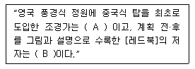
- A : 윌리암 캔트, B : 케파빌리티 브라운
- A : 윌리암 챔버, B : 험프리 랩턴
- A : 브릿지만, B : 윌리암 챔버
- A : 케파빌리티 브라운, B : 험프리 랩턴
(정답률: 85%)

2. 16세기 이탈리아의 르네상스식 별장 정원 가운데 제 1 노단에 정방형의 못이 있고 분수가 있는 중앙의 둥근 섬을 중심으로 하여 십자형의 4개 의다리가 놓여 있는 곳은?
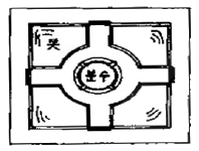
- 피렌체의 보볼리원(Giardino Boboli)
- 란테장(Villa Lante)정원
- 에스테장(Villa d'Este)정원
- 파르네제장(Villa Farnese)정원
(정답률: 57%)
3. 이스파한은 페르시아의 사막지대에 위치한 오아시스 도시이다. 이스파한의 국토계획 요소가 아닌 것은?
- 광로(Chahar Bagh)
- 왕의 광장(Maidan)
- 40주궁(Tchihil-Sutun)
- 오벨리스트(Obelisk)
(정답률: 79%)
4. 우리나라의 궁원이나 원포 즉, 현대 의미의 조경을 관장했던 관서가 있었는데 다음 중 고려에 설치되었던 관서는?
- 산택사
- 내원서
- 상림원
- 장원서
(정답률: 86%)
5. 고대 이집트의 조경과 관련된 내용 중 옳지 않은 것은?
- 녹음을 신성시 하였다.
- 수렵원이 발달하였다.
- 원예가 발달하였다.
- 관개 기술이 발달하였다.
(정답률: 58%)
6. 인도의 정원에 관한 설명 중 옳지 않은 것은?
- 인도의 정원은 호외실(戶外室)로서의 역할을 할 수 있게 꾸며졌다.
- 회교도들이 남부 스페인에 축조해 놓은 것과 흡사한 생김새를 갖고 있다.
- 중국이나 일본, 한국과 같이 자연풍경식 정원이다.
- 물과 녹음이 주요 정원 구성요소이며, 화훼보다 꽃 나무류가 주로 쓰였다.
(정답률: 86%)
7. 신라시대에 생겨난 사절유택(四節遊宅:東野宅, 谷良宅)에 대한 설명 중 옳은 것은?
- 주택정원(住宅庭苑)의 효시이다.
- 서원정원(書院庭苑)의 효시이다.
- 별서정원(別墅庭苑)의 효시이다.
- 지당정원(地塘庭苑)의 효시이다.
(정답률: 71%)
8. 다음 중 직선과 곡선을 혼용한 원지(苑地)는?
- 비원의 애련지
- 경복궁의 경회루지
- 비원의 몽답정지
- 경주의 안압지
(정답률: 78%)
9. 창덕궁 후원의 관람정과 유사한 형태의 정자(亭子)는?
- 유원의 관운정
- 졸정원의 견산루
- 사자림의 사자정
- 창량정의 간산루
(정답률: 63%)
10. 다음 일본조경과 관련된 내용 연결이 옳지 않은 것은?
- 겸창시대 - 회유임천형 - 대선원
- 도산시대 - 다정양식 - 삼보원
- 실정시대 - 고산수식 - 용안사
- 강호시대 - 회유식 - 육의원
(정답률: 36%)
11. 도산서원에 퇴계선생이 단을 만들어 매(梅), 죽(竹), 송(松), 국(菊)을 심고 그 단을 무엇이라 하였는가?
- 정우단(淨友壇)
- 절우사(節友社)
- 사우단(四友壇)
- 매선단(梅仙壇)
(정답률: 65%)
12. 앙드레 르 노르트가 창안한 프랑스 고유의 정원양식이라 할 수 있는 평면기하학식 정원이 아닌 것은?
- 프랑스 쁘띠트라이농(Petit Trianon)의 정원
- 독일의 님펜어버그(Nimphenburg)의 정원
- 오스트리아의 쉔브룬(Scho nbrunn)성의 정원
- 오스트리아의 벨베데레(Belvedere) 정원
(정답률: 63%)
13. 다음 중 일본의 고산수(枯山水)정원의 성립에 가장 크게 영향을 끼친 사상은?
- 선사상(禪思想)
- 신선사상(神仙思想)
- 신도사상(神道思想)
- 정토사상(淨土思想)
(정답률: 36%)
14. 영국 풍경식 정원의 영향을 받은 독일의 대표적인 정원은?
- 칼스루에(Karsruhe) 성관정원
- 헤렌하우젠(Herrenhausen) 궁전
- 님펜부르크(Nymphenbrug) 정원
- 무스카우(Muskau) 정원
(정답률: 55%)
15. 정원의 중심축선상에 Place - Water Parterre - Parterre de Latona - Tapisvert - 아폴로 분천 등이 설치되어 있는 곳은?
- 베르사이유(Versailles) 궁전
- 보르비꽁트(Vaux-le-Vicomte) 궁전
- 몬테큐트 정원(Montacute Garden)
- 벨베데레 정원(Belvedere Garden)
(정답률: 81%)
16. 중국의 낙양가람기에 전해지는 정원으로 대해와 같은 연못을 파서 뱃놀이를 즐기고, 연못 중앙의 봉래산에는 선인관을 지었다는 곳은?
- 졸정원
- 이화원
- 화림원
- 원명원
(정답률: 34%)
17. 정원설계의 기능적, 강조적, 예술적 접근을 강조한 영국 조경가는?
- 거드루드 제킬
- 루이스 바라간
- 크리스토퍼 터너드
- 제임스 코너
(정답률: 24%)
18. 경복궁 동북쪽 후원에 위치한 정자와 원림이 아름다웠던 동산은?
- 서총대
- 폄우사
- 아미산
- 녹산
(정답률: 36%)
19. 일반적으로 조선시대 민가정원(民家庭圓)에 대한 설명 중 옳지 않은 것은?
- 안체 뒤에는 자그마한 동산이나 화계(花階)로 꾸며 놓고 외부와 격리시켰다.
- 정심수(庭心樹)를 뜰 한 가운데 심었다.
- 택지안에 나무를 심을 때는 홍동백서의 이론을 적용시켰다.
- 여유있는 집에서는 괴석이나 세심석 같은 점경물도 설치했다.
(정답률: 77%)
20. 세계적인 문화유산 ‘종묘’에 대한 설명 가운데 옳지 않은 것은?
- 강한 유교 정신이 표현된 절제된 공간이다.
- 향대청, 공신당, 칠사당 등의 부속건물이 있다.
- 정전 뒤쪽 화계에는 화목류나 과목류의 나무를 심었다.
- 제향공간이므로 연못의 섬에는 소나무 대신 향나무를 심었다.
(정답률: 54%)
2과목: 조경계획
21. 자연공원법상의 용도지구(用途地區)가 아닌 것은?
- 자연보존지구
- 경관지구
- 밀집마을지구
- 집단시설지구
(정답률: 29%)
22. 도시화를 전체 인구 중 도시지역에 집중되는 인구의 비율 또는 이러한 비율의 증가로 정의한 사람은?
- R. E. Park
- L. Wirth
- K. Davis
- G. Sioberg
(정답률: 58%)
23. 도시공원 및 녹지 등에 관한 법률에서 도시공원을 그 기능 및 주제에 따라 구분할 때 생활권 공원에 속하는 것은?
- 소공원
- 묘지공원
- 체육공원
- 문화공원
(정답률: 67%)
24. 공간 제한 요소 중의 하나인 천정면(天井面)을 구성하기에 가장 적합한 것은?
- 파골라
- 벽천
- 생울타리
- 콘크리트 블록
(정답률: 64%)
25. 설문지에 의한 조사방법의 특징이 아닌 것은?
- 표준화된 설문지를 여러 응답자에게 반복적으로 사용함으로써 여러 다른 사람들의 응답을 비교 할 수 있다.
- 통계적 처리를 통하여 계량적 결론을 얻어낼 수 있어 비계량적인 결과보다 연구결과에 설득력이 강하다.
- 앞부분의 질문이 나중의 질문에 답하는데 영향을 주는 경우가 있다.
- 설문전에 예비조사를 실시하는 것은 대상자에게 미리 정보를 제공하는 것과 같아 불필요한 과정이다.
(정답률: 62%)
26. 맥하그(Ian Mcharg)가 사용한 도면결합방법(overlay method)을 가장 잘 설명한 것은?
- 각 지역별 생태적 특성을 나타내는 도면을 조합하여 전체지역의 종합도를 만드는 방법이다.
- 주거단지의 건물배치에 이용되는 방법이다.
- 생태적 원리를 쉽게 파악할 수 있도록 설명해 주는 방법이다.
- 생태적인자들에 관한 여러 도면을 겹쳐놓고 일정지역의 생태적 특성을 종합적으로 평가하는 방법이다.
(정답률: 71%)
27. 기본계획안 작성시 교통, 동선계획의 설명으로 올바르지 않은 것은?
- 유원지 등은 주 이용기에 많은 사람들이 몰리므로 주 이용기에 발생되는 최대의 통행량을 계획에 반영한다.
- 시설물 혹은 행위의 종류가 많고 복잡할수록 동선 체계를 복잡하게 한다.
- 통행로 선정시 가능한 짧은 거리로써 보통은 직선적 연결이 바람직하지만 지형적 여건으로 우회될 경우도 있다.
- 보행동선과 차량동선이 만나는 부분에서는 보행자의 안전을 위해 보행동선이 우선적으로 고려되어야 한다.
(정답률: 67%)
28. 지구공원의 개설로 얻을 수 있는 효과가 아닌 것은?
- 지구 수준에서의 노지 거점으로 도시의 경관을 조성하고 생활 환경을 개선 시킬 수 있다.
- 동사무소나 공회당을 부설시키면 지구중심으로써 지구민의 편익과 친목을 도모하여 연대의식을 함양 시킬 수 있다.
- 스포츠를 통하여 청소년을 건전한 방향으로 유도시켜 탈선 및 범죄의 감소를 가져올 수 있다.
- 자원지향적(resource-oriented)공원이므로 고급화된 도시민의 여가 욕구를 충족시킬 수 있다.
(정답률: 55%)
29. 레크리에이션 계획에는 여러 접근방법이 있다. 이중 일반 대중이 여가 시간에 언제 어디서 무엇을 하는가를 상세히 파악하여 그들의 구체적인 행동패턴에 맞추어 계획하려는 방법은?
- 자원접근법
- 활동접근법
- 경제접근법
- 행태접근법
(정답률: 67%)
30. 우리나라의 공원, 유원지 등은 기후적 영향으로 보통 몇 계절형으로 분류되는가?
- 1 계절형
- 2 계절형
- 3 계절형
- 4 계절형
(정답률: 68%)
31. 옥상정원의 설계시 일반적으로 고려하지 않아도 될 대상공간(site)의 조건은?
- 지반의 구조와 강도
- 구조체의 방수성능
- 미기후 조건
- 자연 배수를 위한 경사도
(정답률: 60%)
32. 다음은 야생동물(wild life)의 서식처(분포)와 관련된 인자들이다. 야생동물의 서식처(분포)와 가장 밀접한 관련이 있는 것은?
- 지형의 변화
- 식생분포
- 토양분포
- 인공구조물 분포
(정답률: 55%)
33. 오리엔탈링크(oriental link)에 대한 설명 중 틀린것은?
- 특징물이 많은 구릉지대 일것
- 코스를 쉽게 찾아낼 수 있을 것
- 안전회로도 되어 있을 것
- 자유롭게 통행 할 수 있는 지역일 것
(정답률: 21%)
34. 우리나라 자연공원 지정기준에 맞지 않은 것은?
- 자연생태계
- 자연경관
- 해안보존
- 위치 및 이용편의
(정답률: 52%)
35. 도시공원 및 녹지 등에 관한 법률에서 도시공원의 점용 허가를 받지 않아도 되는 것은?
- 산림의 간벌
- 토석의 채취
- 물건의 적치
- 죽목의 벌채 ㆍ 재식
(정답률: 32%)
36. 사회적 행태의 이론적 모델에 해당하지 않는 것은?
- PEQI 모델
- 프라이버시 모델
- 스트레스 모델
- 2원적 모델
(정답률: 24%)
37. 공간수식 기법에 대한 설명 중 옳지 않은 것은?
- 인간적 척도란 인간활동에 관련된 적절한 크기를 말한다.
- 기념성이 강조되는 곳은 인간적 척도(human scale)로 구성한다.
- 주색조(主色調)를 설정하면 옥외공간에 통일성이 조성된다.
- 슈퍼그래픽은 건물 전체를 하나의 화폭으로 생각하고 색채디자인을 하는 것이다.
(정답률: 42%)
38. 조경계획에서 조망(view)의 처리방법을 설명한 것 중 틀린 것은?
- 조망은 경관의 특성을 나타내는 중요한 요소로 조망과 토지이용은 상호 조화를 이루어야 한다.
- 처음 한눈에 조망의 전체가 다 보이도록 계획한다.
- 동선을 따라 조망의 부분이 점진적으로 보이도록하여 최종 조망지점에서 조망의 전체가 보이도록 한다.
- 조망을 배경으로 조망 앞에 계획되는 공간은 시각적으로 우세하게 계획하거나 배경이 되는 조망이 강조되도록 계획한다.
(정답률: 57%)
39. 계획 대상지의 수용력 산정에 있어서 최대시이용 자수(最大時利用者數)가 산출된 후에 시설별로 분산, 배분하여 각 시설 규모를 산출하려 한다. 다음 중 이과정에서 적용해야 할 사항으로 구성된 항목은?
- 시설이용율, 공간원단위
- 최대일율, 시설이용율
- 최대일율, 회전율
- 시설이용율, 개장시간
(정답률: 27%)
40. 1,000평의 대지에 용적률 300%, 건폐율 25%의 건물을 세웠다. 이 건물의 전체 연면적의 50%까지를 상업용도로 전용 가능하다고 할 때, 상업용도로 사용할수 있는 최대 총 바닥 면적은?
- 1000평
- 1500평
- 2000평
- 3000평
(정답률: 67%)
3과목: 조경설계
41. 다음 그림에 대한 설명 중 가장 적합한 것은?
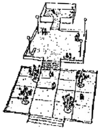
- 공간의 환영(lllusion of space)
- 공간의 위계(Hierar of space)
- 공간의 폐쇄(Enclosing of space)
- 공간의 규모(Scale of space)
(정답률: 64%)
42. 노외주차장의 주차형식에 따른 다음 차로 너비 중 출입구가 2개일 때 내용으로 틀린 것은?
- 평행주차 - 3.3m 이상
- 45° 대향주차 - 3.0m 이상
- 교차주차 - 3.5m 이상
- 직각주차 - 6.0m 이상
(정답률: 35%)
43. 모듈러(modular)와 가장 관련이 없는 것은?
- 평행주차 - 3.3m 이상
- 45° 대향주차 - 3.0m 이상
- 교차주차 - 3.5m 이상
- 직각주차 - 6.0m 이상
(정답률: 46%)
44. 제도에 있어서 도형의 표기 방법 중 선의 형식과 두께에 관한 설명으로 옳지 않은 것은?
- 굵은 실선은 보이는 물체의 윤곽을 나타내는 선이다.
- 굵은 파선은 보이지 않는 물체의 면들이 만나는 윤곽을 나타내는 선이다.
- 가는 2점 쇄선은 특별한 요구 사항을 적용할 범위와 면적을 나타내는 선이다.
- 가는 1점 쇄선은 대칭을 나타내거나 그림의 중심을 나타내는 선이다.
(정답률: 27%)
45. 제도에 있어서 도형의 표기 방법 중 선의 형식과 두께에 관한 설명으로 옳지 않은 것은?
- 굵은 실선은 보이는 물체의 윤곽을 나타내는 선이다.
- 굵은 파선은 보이지 않는 물체의 면들이 만나는 윤곽을 나타내는 선이다.
- 가는 2점 쇄선은 특별한 요구 사항을 적용할 범위와 면적을 나타내는 선이다.
- 가는 1점 쇄선은 대칭을 나타내거나 그림의 중심을 나타내는 선이다.
(정답률: 26%)
46. A5제도용지의 크기는 A2 제도용지의 몇 배 인가?
- 1/2배
- 1/4배
- 1/8배
- 1/16배
(정답률: 70%)
47. 형태심리학에서 도형조직의 원리 중 연속성(continuation)의 원리를 나타내고 있는 그림은?
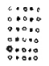
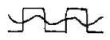
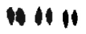
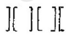
(정답률: 59%)
48. 루빈(E. Rubin)이 형태심리학에서 주장하는 도형(圖形, figure)과 배경(背景, ground)의 설명 중 가장 부적당한 것은?
- 도형은 배경보다 더욱 가깝게 느껴진다.
- 도형은 물질같은 성질을 지니며 배경은 물건같은 성질을 지닌다.
- 도형은 배경에 비하여 더욱 지배적이며 잘 기억된다.
- 도형은 배경에 비하여 더욱 의미있는 형태로 연상된다.
(정답률: 72%)
49. Berlyne이 주장하는 인간의 미적 반응과정이 순서대로 올바르게 구성된 것은?
- 환경적 자극 → 자극선택 → 자극해석 → 자극탐구 → 반응
- 환경적 자극 → 자극해석 → 자극선택 → 자극탐구 → 반응
- 환경적 자극 → 자극탐구 → 자극선택 → 자극해석 → 반응
- 환경적 자극 → 자극선택 → 자극탐구 → 자극해석 → 반응
(정답률: 71%)
50. 아래의 그림에서 A의 부분을 가장 돋보이게 하려면 다음 색 중 어느 것이 적당한가?
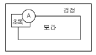
- 귤색
- 파랑색
- 백색
- 남색
(정답률: 69%)
51. 도시공간에서 식별성과 다양성의 관계를 가장 올바르게 설명한 것은?
- 식별성이 높아짐에 따라 다양성도 높아진다.
- 식별성이 높아짐에 따라 다양성도 낮아진다.
- 중간정도의 식별성에 다양성이 가장 높다.
- 식별성과 다양성의 관계는 함수관계로 설명할 수 없다.
(정답률: 27%)
52. 설계과정 중 공간의 기본구상 수립단계에서 작성되는 개념도의 표현에서 고려하지 않아도 되는 내용은?
- 설계목표의 실현가능성과 예측되는 이용만족도
- 기능이나 공간들의 개방성과 폐쇄성
- 기능이나 공간별 출입부의 위치
- 공간적 기능과 미적 목표 달성에 맞는 구체적 수종명
(정답률: 43%)
53. 먼셀 색표계의 내용에 관한 설명 중 잘못된 것은?
- R, Y, G, B, P의 5색과 그 보색인 5색을 추가하여 10색상을 기본으로 만든 것이다.
- 채도 단위는 2단위를 기본으로 하였으나 저채도 부분에서는 실용적으로 1과 3을 추가하였다.
- 무채색의 명도는 숫자 앞에 ‘N'을 붙인다.
- 유채색의 명도는 0.5단위로 배열되어 0.5부터 9.5까지 19단계로 하였다.
(정답률: 45%)
54. 치수선 및 치수 보조선에 관한 설명으로 옳은 것은?
- 치수 보조선은 점선을 사용한다.
- 인출선은 치수선을 일컫는 이름이다.
- 치수 보조선은 치수를 기입하는 형상에 대해 수직으로 그린다. 필요한 경우에는 경사지에 그릴 수 있다.
- 치수의 단위는 mm를 원칙으로 하며, 부득이한 경우 mm이외의 단위를 사용하는 경우도 있다.
(정답률: 32%)
55. 다음 중 공간을 구성하는 공통된 기본적인 기법이 아닌 것은?
- 공간형성기법
- 공간연결기법
- 공간활용기법
- 공간수식기법
(정답률: 18%)
56. 시각적 선호도(visual preference)의 일반적 측정 방법이 아닌 것은?
- 행태측정(behavioral measure)
- 정신생리측정(psychophysiological measure)
- 구두측정(verbal measure)
- 표정측정(expressional measure)
(정답률: 50%)
57. 한국의 스키장 입지기준에 관한 내용 중 적절하지 않은 것은?
- 해발 고도 500m 이상의 적설량이 많은 지역
- 리프트 1기의 표고차는 보통 70~300m를 기준으로 한다.
- 스키 슬로프의 사면은 북동향이 가장 좋다.
- 사면방향과 직각으로 부는 바람은 좋지 않고 풍속이 5m/sec 이상은 부적합하다.
(정답률: 37%)
58. 자전거도로의 설계시 도로의 폭의 기준은?
- 60cm 이상
- 90cm 이상
- 110cm 이상
- 140cm 이상
(정답률: 46%)
59. Litton이 분석한 산림경관의 유형 중 기본적 유형(fundamental types)에 포함되지 않는 것은?
- 전경관(Panoramic Landscape)
- 일시경관(Ephemeral Landscape)
- 위요경관(Enclosed Landscape)
- 지형경관(Feature Landscape)
(정답률: 45%)
60. 도로설계 요소 중 시거(Sight distance)에 대한 설명 중 틀린 것은?
- 안전시거(安全視距) - 위험이 따르지 않을 정도의 시거
- 정지시거(停止視距) - 전방에서 오는 차량을 인지하고 제동 정지하는데 필요한 시거
- 피주시거(避走視距) - 핸들을 돌려 후진시 필요한시거
- 추월시거(追越視距) - 전방의 차량을 추월하는데 필요한 시거
(정답률: 70%)
4과목: 조경식재
61. 따뜻한 지방에 식재를 하면 그늘에서 견디는 힘이 약해져 곁가지가 마르기 때문에 좋은 정원수가 되기가 힘든 수종은?
- Taxus cuspidate S. et Z.
- Torreya nucifera S. et. Z.
- Cephalotaxus korean Nak .
- Cedrus deodara Loudon .
(정답률: 32%)
62. 거친 돌 조각물을 더욱 돋보이게 하기 위한 배경 식재로 가장 적합한 설명은?
- 큰 잎이 넓은 간격으로 소생하는 수종
- 작은 잎이 넓은 간격으로 소생하는 수종
- 작은 잎이 조밀하게 밀생하는 수종
- 잎의 크기나 간격과는 관계가 없다.
(정답률: 77%)
63. 수목의 음 ㆍ 양수 구별을 위한 외형상의 현저한 특징 중 틀린 것은?
- 지서(枝序)의 양
- 초두(梢頭)의 위치
- 엽열(葉列)의 형태
- 주간(主幹)의 분화
(정답률: 43%)
64. 다음 식생유지관리와 관련된 설명 중 옳지 않은 것은?
- 잔디의 깍기 높이와 횟수는 잔디의 종류, 용도, 상태 등을 고려하여 한 번에 초장의 1/2 이상으로 깎아야 한다.
- 조경수목류의 전정은 다듬기와 솎아내기로 구분하며, 수세, 미관, 통풍, 채광 등을 고려한다.
- 뗏밥주기란 토양표면에 쌓여 있는 죽은 잔디의 잎이나
- 유채색의 명도는 0.5단위로 배열되어 0.5부터 9.5까지 19단계로 하였다.
(정답률: 37%)
65. 우리나라 중부지방의 건성천이에서 최종적으로 이루어지는 극성상 수종들로 옳은 것은?
- Pinus densiflora S.와 Acer palmatum Thunb
- Prunus sargentii Rehder. dhk Osmanthus fragrans Lour
- Rhododendr on mucronulatum Turcz. dhk Rhododendron schlippenbachii Max
- Quercus acutssima Carr. 와 Carpinus laxiflora BI
(정답률: 57%)
66. 도로에 방음식재를 하는 경우 그림과 같이 음원(音原)과 수음점(受音点)의 거리를 ℓ로 한다면 수음점을 커버하기 위한 수림대의 최소 길이는 얼마로 잡는것이 바람직한가?
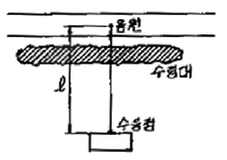
- 1ℓ
- 2ℓ
- 3ℓ
- 4ℓ
(정답률: 20%)
67. 다음 중 고속도로 식재시 주행기능의 증진을 목적으로 하는 기능식재방법으로 가장 적합한 것은?
- 유도식재
- 법면보호식재
- 수경식재
- 방음식재
(정답률: 63%)
68. 군락식재 설계를 위하여 식생조사를 하고자 한다. 다음 중 군락조사와 관계가 없는 것은?
- 균등성지수와 유사도지수
- Braun - Blanquet의 우점도와 군도
- 상대성장율과 득묘율
- 중요치와 적산우점도
(정답률: 57%)
69. 식재설계의 미적 요소 중 동질성을 창출하기 위한 여러 부분들의 조화있는 조합을 말하는 것은?
- 조화성
- 균형성
- 통일성
- 단순성
(정답률: 35%)
70. 식생에 미치는 환경요인 중에서 식생 분포를 결정 하는데 가장 영향을 미치는 요인은?
- 기후요인
- 지형요인
- 생물요인
- 인위적요인
(정답률: 61%)
71. 잎이 피기 전에 꽃이 먼저 피는 수종은?
- Cornus kousa Buerger
- Cornus officinalis Siebold et Zuccarini
- Sorbus commixta Hedlund
- Camellia japonica Linnaeus
(정답률: 32%)
72. Tilla amurensis Rupr, Acer palmatum Thunb, Ulmus davidiana var. japonica Nak, Quercus acutissima Carr 등의 수종이 가장 왕성한 생장을 보이는 토양산도는?
- pH 4.5 ~ 4.7
- pH 4.8 ~ 5.5
- pH 5.5 ~ 6.5
- pH 6.6 ~ 7.3
(정답률: 58%)
73. 한 곳에서 잎이 3개씩 모여나고, 잎의 길이는 7~14Cm 정도되며 딱딱하고 비틀리는 것으로 사방조림용으로 많이 이용되는 수종으로 가장 적합한 것은?
- Pinus strobus L.
- Punus rigida Mill.
- Pinus koreansis S et z.
- Pinus banksiana Lam.
(정답률: 58%)
74. 다음 ( )에 들어갈 적당한 것은?
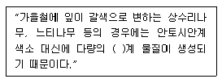
- 카로티노이드(carotinoid)
- 타닌(tannin)
- 크리산테민(chrysanthemine)
- 크산토필(xanthopyll)
(정답률: 50%)
75. 브라운 블랑케의 식생조사법으로 식생조사를 할 때 교목림의 조사구역은 보통 어느 정도의 크기로 하는가?
- 50 ~ 140m2
- 150 ~ 500m2
- 510 ~ 740m2
- 750 ~ 1,000m2
(정답률: 71%)
76. 배식 기본 형태 중 자연식에 해당되는 것은?
- 표본식재
- 집단식재
- 교호식재
- 부등변삼각형식재
(정답률: 69%)
77. 다음 중 낙우송과에 속하는 수목인 것은?
- Sciadopitys verticillata S.
- Torreya nucifera S.
- Abies koreana Wilson.
- Cedrus deodara Loudon
(정답률: 26%)
78. 일반적으로 가로수의 운반 및 식재방법에 관한 설명 중 틀린 것은?
- 식재목은 굴취 2 ~ 3일 전에 충분히 관수하고, 남ㆍ 북의 방향을 리본으로 표시하여 식.
- 조경수목류의 전정은 다듬기와 솎아내기로 구분하며, 수세, 미관, 통풍, 채광 등을 고려한다.
- 뗏밥주기란 토양표면에 쌓여 있는 죽은 잔디의 잎이나
- 유채색의 명도는 0.5단위로 배열되어 0.5부터 9.5까지 19단계로 하였다.
(정답률: 0%)
79. 다음 수관의 고유수형 중 우산형(雨傘形)의 형태가 아닌 것은?
- Acer negundo L.
- Prunus persica Batsch
- Prunus yedoenis Matsumura
- Euonymus japonica Thunb.
(정답률: 52%)
80. 옥상 및 인공지반 조경에 있어서 경량토의 용도 및 특성에 대한 설명으로 적합하지 않은 것은?
- 버미큘라이트는 식재 토양층에 혼용하여 사용하며 다공질로서 보수성, 통기성, 투수성이 좋다.
- 화산 자갈은 배수층에 사용하며 화산 분출암 속의 수분과 휘발성 성분이 방출된 것이다.
- 펄라이트는 식재 토양층에 혼용하여 사용하며 염기성 치환용량이 커서 보비성이 크며, 산도가 높다.
- 석탄재는 배수층과 식재 토양층에 혼용하여 사용하며 한랭한 습지의 갈대나 이끼가 흙 속에서 탄소화된 것이다.
(정답률: 39%)
5과목: 조경시공구조학
81. 일반적으로 토량의 부피는 자연상태보다 흐트러진 상태의 것이 많아지게 된다. 다음 중 흐트러진 상태의 토량이 체적이 가장 많이 늘어나는 것은?
- 점토
- 보통암
- 모래질 흙
- 풍화암
(정답률: 22%)
82. 200m의 측선을 20m 줄자로 측정하여 1회 측정에서 +5㎜의 누적오차와 ±25㎜의 우연오차가 있었다면 정확한 거리는?
- 200.00 ± 0.075m
- 200.⑤ ± 0.⑤m
- 200.00 ± 0.⑤m
- 200.⑤ ± 0.075m
(정답률: 23%)
83. 보(beam)의 종류 중 3개 이상의 지점을 가지면서 적당한 수의 돌쩌귀(hinge)를 배치하고 있는 정정보는?
- 연속(continuous)보
- 캔틸레버(cantilever)보
- 게르버(Gerber)보
- 내민(cverhanging)보
(정답률: 53%)
84. 다음 방청도료(녹막이칠)의 종류에 해당되지 않는 것은?
- 광명단
- 역청질도료
- 징크로메이트칠
- 에멀젼페인트
(정답률: 40%)
85. 다음 암석의 분류 중 수성암계가 아닌 것은?
- 응회암
- 사암
- 안산암
- 석회암
(정답률: 50%)
86. 시멘트 600포대를 12포대 높이로 쌓아 보관하기위한 가설물의 필요면적은?
- 10 m2
- 20 m2
- 50 m2
- 100 m2
(정답률: 48%)
87. 다음 중 네트워크 공정표의 종류에 관한 설명 중 옳지 않는 것은?
- CPM은 결합점(Event) 중심의 일정계산이다.
- 최장경로와 여유공정에 의해 공사 통제 가능하다.
- CPM의 활용은 반복사업 및 경험이 있는 사업에서 실시한다.
- PERT의 개발배경은 1958년 미해군 폴라리스(Polaris) 핵잠수함 건조계획시 개발되었다.
(정답률: 44%)
88. 공사수량 산출시 운반, 저장, 가공 및 시공과정에서 발생되는 손실량을 미리 예측하여 산정하는 것은?
- 할증수량
- 설계수량
- 계획수량
- 법정수량
(정답률: 67%)
89. 표준품셈에서 품에 포함된 것으로 규정된 평지에서 소운반 거리는 몇 m이내인가?
- 10 m
- 20 m
- 30 m
- 40 m
(정답률: 72%)
90. 아스팔트로 포장된 폭(幅)이 5m되는 차도에서 횡단구배를 2% 유지해야 한다면, 도로의 노정(路頂)과 노단(路端)의 수직적인 높이 차이는?
- 0.⑤ m
- 0.1 m
- 1.25 m
- 2.5 m
(정답률: 34%)
91. 다음 그림은 경사 도로의 등고선을 표시하고 있다. 이 도로의 단면은 어떻게 나타나는가?
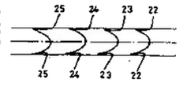
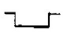
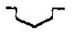
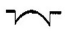
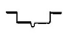
(정답률: 56%)
92. 옹벽에 뒷채움 흙을 채운 뒤에도 벽체의 변위가 생기지 않는 상태에서 작용하는 토압은?
- 정지토압(靜止土壓)
- 주동토압(主動土壓)
- 수동토압(受動土壓)
- 활동토압(滑動土壓)
(정답률: 54%)
93. PERT/CPM 공정계획에 의한 공기 산출결과 정상작업(정상공기)으로는 불가능하여 아간작업을 하여야 할 경우, 작업능률 저하를 고려한 품은 몇 ％ 까지 가산 할 수 있는가?
- 30 %
- 25 %
- 15 %
- 10 %
(정답률: 20%)
94. 강우의 유출에 대한 설명으로 옳지 않은 것은?
- 점토질 토양에서는 상대적으로 유출양이 많다.
- 경사가 급할수록 유출량이 많다.
- 도시지역의 유출계수가 많다.
- 투수성 포장은 유출계수를 높인다.
(정답률: 56%)
95. 다음 그림에서 도심축에 대한 단면 2차모멘트는 얼마인가?
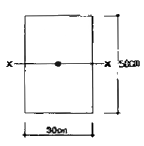
- 31,250 ㎝4
- 312,500 ㎝4
- 37,500 ㎝4
- 375,000 ㎝4
(정답률: 43%)
96. 시멘트의 품질시험에 관한 설명 중 틀린 것은?
- 혼합시멘트에서 혼화재의 혼입량이 많아 질수록 비중이 작아진다.
- 비표면적이 큰 시멘트 일수록 분말이 미세하며 일반적으로 강도발현이 빨라지고 수화열의 발생량도 많아진다.
- 풍화한 시멘트는 수화열이 커진다.
- 수화열은 시멘트의 화학조성과 비표면적이 좌우된다.
(정답률: 40%)
97. 기존형 벽돌로 0.5B의 두께로 길이 5m, 높이 2m의 담을 쌓으려 할 때 필요한 벽돌량(정미량)은?
- 약 415장
- 약 650장
- 약 750장
- 약 1,299장
(정답률: 30%)
98. 다음 중 공사관리의 3대 요소에 해당하지 않는 것은?
- 자재관리
- 공정관리
- 품질관리
- 원가관리
(정답률: 60%)
99. 등고선 상에서 높이가 각각 98.2m 와 107.6m 인 두 지점 사이의 수평거리가 400m 라면, 높이차 1m의 수평거리는 얼마인가?
- 약 76.6m
- 약 62.4m
- 약 56.5m
- 약 42.6m
(정답률: 55%)
100. 다음 그림과 같이 보에 3ton의 하중이 가해질 때 RA 와 RB는 각각 얼마인가? (단, 소수점 3자리에서 반올림한다.)
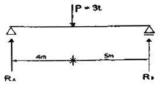
- 반력 RA = 0.75 t , 반력 RB = 0.60 t
- 반력 RA = 0.60 t , 반력 RB = 0.75 t
- 반력 RA = 1.33 t , 반력 RB = 1.67 t
- 반력 RA = 1.67 t , 반력 RB = 1.33 t
(정답률: 17%)
6과목: 조경관리론
101. 다음 중 진동과 충격에 강하므로 도로조명에 많이 사용되고, 연색성이 낮으나 수명이 가장 긴 조명등은?
- 형광등
- 백열등
- 금속할로겐등
- 수은등
(정답률: 74%)
102. 조경 해충 중 습기를 싫어하며 눈에 겨우 보일 정도의 미세한 것으로 꽁무니에서 거미줄 같은 것을 내어 잎과 어린줄기에 치며 잎은 백색으로 퇴화시키는 해충의 효과적인 방제는?
- 파라코액제(그라목손)을 살포한다.
- 디코폴수화제(켈센)을 살포한다.
- 석회유황합제(이비엠액상석회)을 살포한다.
- 디포수화제(디프록스)를 살포한다.
(정답률: 14%)
103. 다음 중 식물생육에 필요한 다량원소(多量元素)로 옳은 것은?
- Cl
- l
- Mo
- Mg
(정답률: 74%)
104. 목재의 건조 전 중량이 150g이고, 건조 후 중량이 125g인 목재의 함수율은?
- 20%
- 30%
- 40%
- 50%
(정답률: 71%)
1⑤. 다음 중 난지형 잔디의 특징이 아닌 것은?
- 집약관리지역에 적합하고, 조방관리지역에 부적합하다.
- 내음성이 없어 수목 밑 음지에서는 생육이 부진하다.
- 잔디밭 조성이 느리고 손상되었을 때 회복속도가 느리다.
- 늦가을 부터 이른 봄까지는 갈색이며, 이 기간 동안에는 생장이 이루어지지 않으므로 답압에 약하다.
(정답률: 29%)
106. 느티나무에서 자주 발생하는 병해로 잎에 작은 갈색의 반점이 생겨서 점점 퍼지면서 엽맥부근에 다각형의 병반이 형성되고, 병반의 종양부는 회백색이며 병증이 진행되면 입이 탈락하는 경우가 있는 것은?
- 흰가루병
- 비짜루병
- 흰별무늬병
- 갈색무늬병
(정답률: 45%)
107. 직영관리 방식의 장점이 아닌 것은?
- 임기응변적 조처가 가능하다.
- 관리책임이나 관리 소재가 명확하다.
- 관리실태를 정확히 파악할 수 있다.
- 전문가를 합리적으로 이용할 수 있다.
(정답률: 74%)
108. 조경공간에서 관리하자에 의한 안전사고로 옳은 것은?
- 그네에서 뛰어내리는 곳에 벤치가 설치되어 있어 충돌한 사고
- 관객이 백네트에 올라갔다가 떨어진 사고
- 유리조각을 방치하여 손발을 베인 사고
- 시설물의 구조상 접속부에 손이 끼거나 구조 자체의 결함에 의한 사고
(정답률: 70%)
109. 조경관리 계획 수립시 작업별 1인당 소요인원을 산출할 경우 기초자료도 활용될 수 있는 내용만으로 구성된 것은?
- 단위작업률, 미래의 예상실적, 작업능률
- 연간작업량, 단위작업률, 과거의 실적
- 미래의 예상실적, 작업능률, 연간작업량
- 작업능률, 연간작업량, 단위작업률
(정답률: 20%)
110. 공원의 화장실에 대한 관리 내용 중 가장 거리가 먼 것은?
- 청결을 제일로 하고 통풍이 나쁘고 습기 많은 곳을 피한다.
- 풍기 문제를 고려한 칸막이 구조로 한다.
- 짙은 색채로 도색하여 더러움이 드러나지 않게 한다.
- 청소관리가 쉽고 거칠은 사용에도 견디는 재료를 선택한다.
(정답률: 79%)
111. 공공의 조경 시설물의 유지관리 목표가 아닌 것은?
- 이용기회를 많게 하여 이용수입을 증대시킨다.
- 경관미가 있는 공간과 시설을 조성 유지한다.
- 항시 깨끗하고 정돈된 상태로 유지한다.
- 안전하고 쾌적한 시설 이용이 되게한다.
(정답률: 75%)
112. 콘크리트 포장의 파손 특징이 아닌 것은?
- 국부적침하
- 단차
- 표면연화
- 균열
(정답률: 37%)
113. 다음 중 수목의 외관수술시 사용되는 공동(cavity) 충전재료 중 내호성, 내산화성, 기계적 강도, 내마모성, 접착력 등이 우수하고, 효과면에서 다른 재료들 보다 가장 좋은 것은?
- 폴리우레탄폼
- 우레탄고무
- 에폭시레진
- 고무밀납
(정답률: 29%)
114. 다음 공정표의 종류 중 작업의 관련성을 나타낼수는 없으나 공사의 기성고를 표시하는데 편리한 공정표로 각 부분공사의 상세를 나타내는 부분공정표에 적합하지만 보조적인 수단으로 사용되는 것은?
- 횡선식공정표
- 사선식공정표
- 진도관리곡선
- 네트워크공정표
(정답률: 22%)
115. 다음과 같은 네트워크 공정관리에서 각 작업의 여유시간이 틀린 것은?
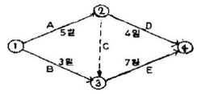
- A작업의 여유시간은 없다.
- B작업의 여유시간은 3일이다.
- D작업의 여유시간은 3일이다.
- E작업의 여유시간은 없다.
(정답률: 67%)
116. 다음 조경시설물의 정기점검과 보수의 목표에 관한 설명으로 맞는 것은?
- 원로, 광장의 아스팔트 포장 균열 보수 : 전면적의 15~20%의 함몰이 생길 때(3 ~ 5년)
- 원로, 광장의 평판 교체 : 파손장소가 눈에 띌 때(2년)
- 시소의 베어링 보수 : 베어링이 마모되어 삐걱 삐걱소리가 날 때(3 ~ 4년)
- 목재 벤치의 좌판보수 : 전체의 20% 이상 파손, 부식이 생길 때(5 ~ 7년)
(정답률: 55%)
117. 레크리에이션 수용능력을 물리적, 생태적 및 심리적 수용능력으로 구분한 체계를 확립한 사람은?
- LaPage
- Aldredge
- PenFold
- Godshalk & Parker
(정답률: 41%)
118. 다음 자연공원지역의 관리 중 이용자에 의한 손상관리의 관계를 기술한 것 중 옳지 않은 것은?
- 문제되는 조건(바람직하지 않은 이용자에 의한 손상)의 파악
- 바람직하지 않은 손상들의 발생과 정도에 영향을주는 잠재적 요인의 결정
- 바람직하지 않은 조건들을 완화시킬 수 있는 관리전략의 선택
- 바람직하지 않은 손상을 막을 수 있는 이용객에 대한 활발한 교육실시
(정답률: 36%)
119. 장미 등의 화목류에 발행하는 흰가루병에 대한 설명으로 옳지 않은 것은?
- 여름철 기온이 낮고, 건조가 계속될 때 발행한다.
- 주로 신초부에 발생하며, 흰가루를 뿌린듯이 보인다.
- 전 생육기를 통해 발행하나, 6월부터 혹은 장마철 이후부터 급속히 퍼진다.
- 지오판(톱신엠) 수화제로 방제한다.
(정답률: 50%)
120. 병든 식물의 표면에 병원체의 병원 기관이나 번식기관이 나타나 육안으로 식별되는 것을 가리키는 것은?
- 병징
- 병반
- 표징
- 병폐
(정답률: 56%)